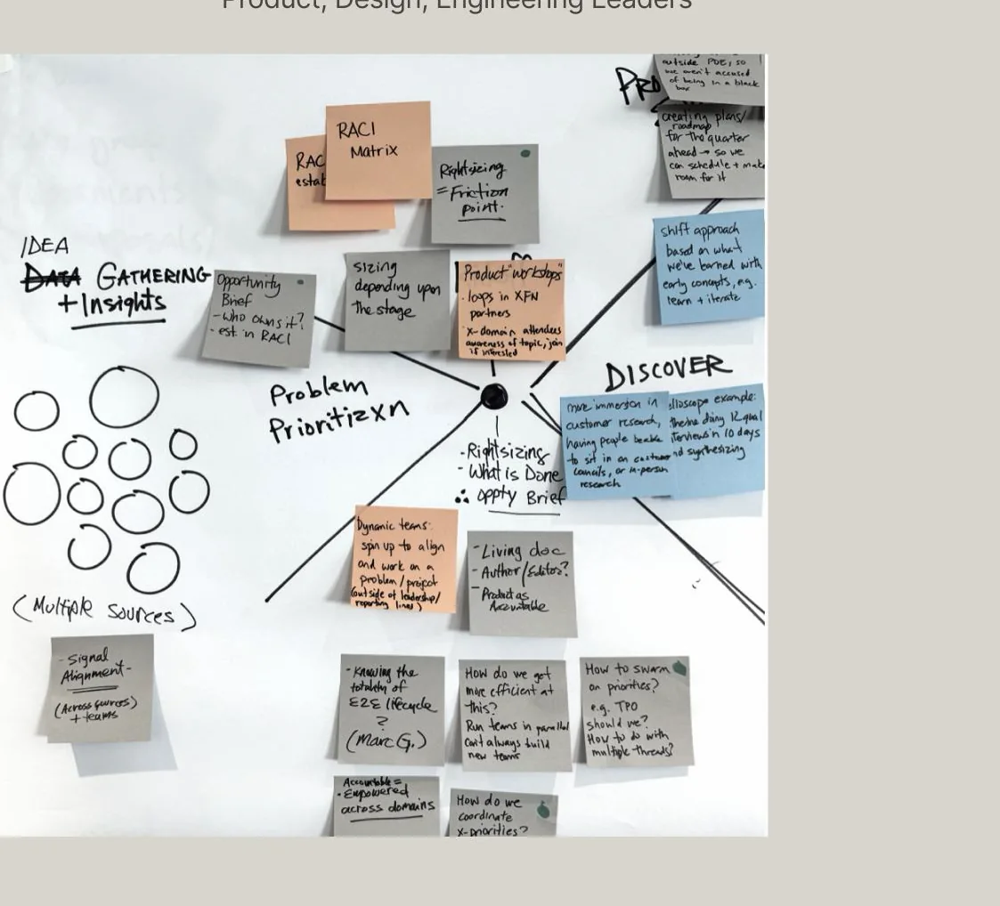
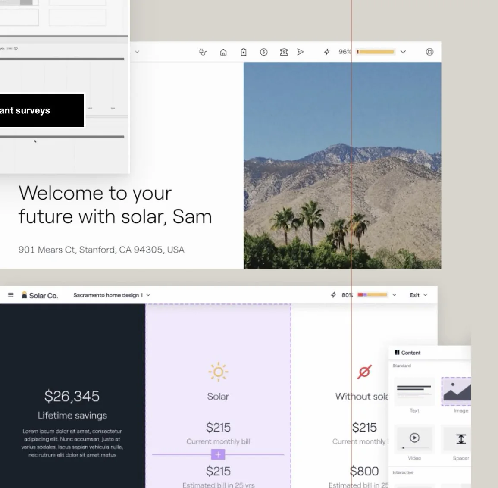
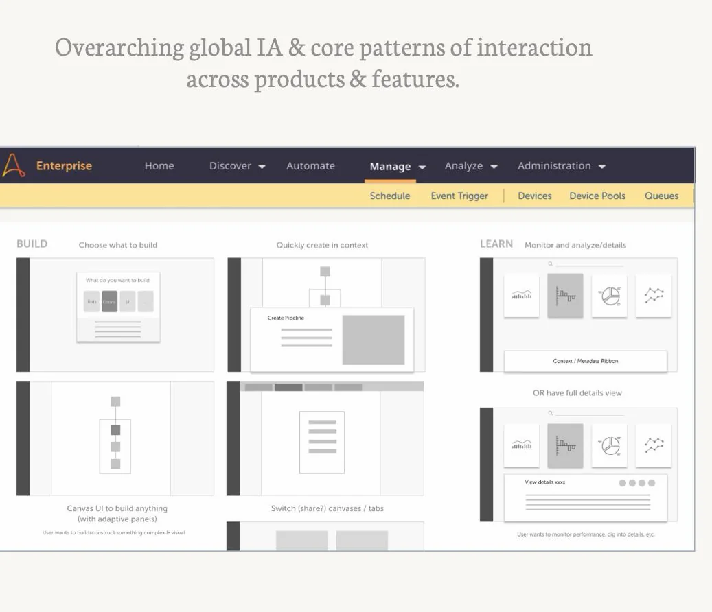
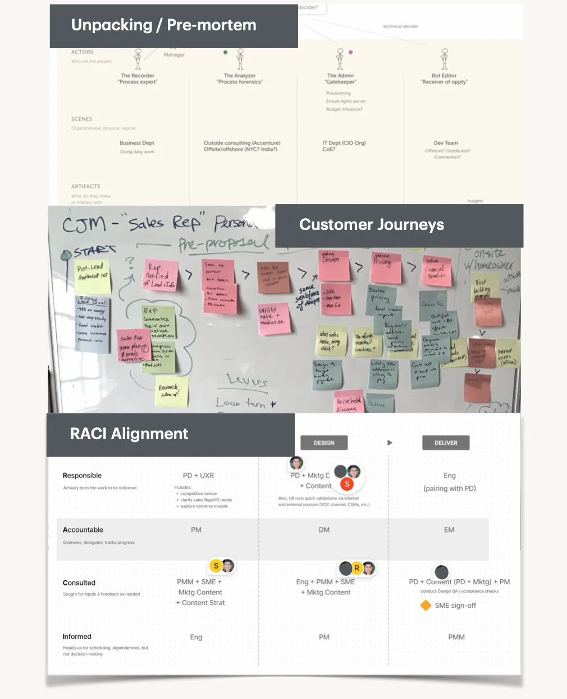
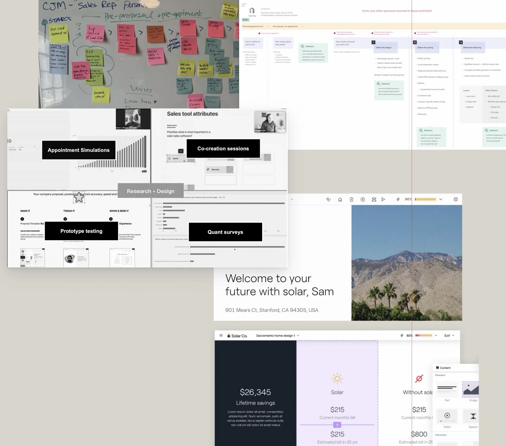
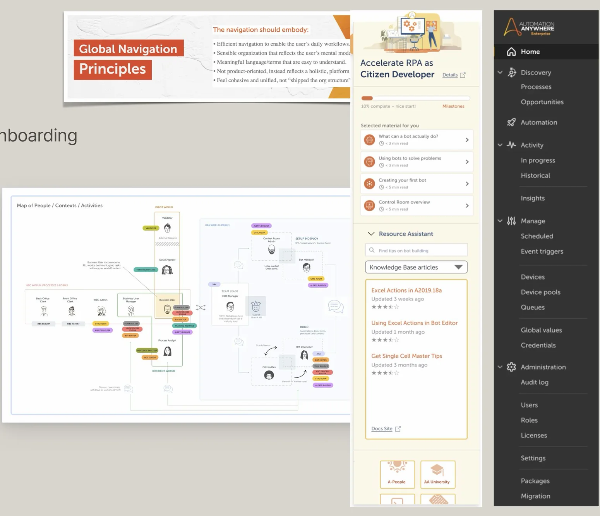

01 / FRAME
Find the real problem.
Challenge assumptions, surface tradeoffs, and decide what actually matters.
I help product teams navigate the messy middle—framing the right problems, designing the core experience, and getting people aligned to move.


SOME PLACES I'VE WORKED
From startups to large enterprise platforms.
Across strategy, operations, and the details of the product itself. Different altitudes, same goal: clearer thinking and better outcomes.
Challenge assumptions, surface tradeoffs, and decide what actually matters.

Bring structure and coherence to complex platforms, workflows, and interfaces.

Partner across product, design, and engineering—with a point of view and room for others.
Not just beautiful screens. Better ways to navigate, decide, adopt, and get things done.

Redesigned Sales Mode around the needs of solar sales reps, from customer research to a Northstar vision and a new product experience.

Unified navigation and onboarding across a growing automation platform, bringing coherence to its features, language, and daily workflows.
Outcomes reported in the Fall 2026 project overview; figures reflect team and product results.
“Meet folks where they are.”Then make the situation visible enough that we can move forward together.
Some of the things I use to make complexity discussable—before it becomes expensive.
Select any artifact to see it larger.
HELLO, I'M UDAY.
I've spent 25+ years working on products that are hard to untangle—and with people who bring very different ideas of what matters.
I move between big-picture strategy, hands-on design, and the unglamorous work of helping teams collaborate. I bring a point of view, but I don't arrive with the answer already decided.
For me, good design leadership is about making space for better questions, real participation, and stronger judgment—not simply pushing work through a pipeline.
Have a complex product challenge?
A fuzzy product direction. A difficult platform problem. A team that needs alignment. I'm happy to compare notes.